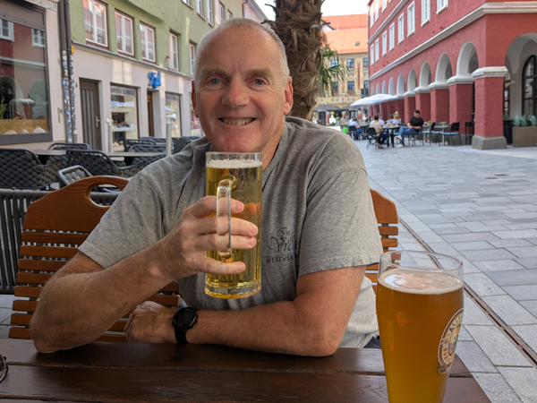
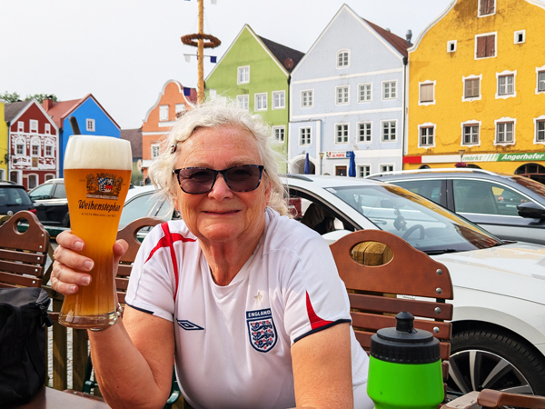
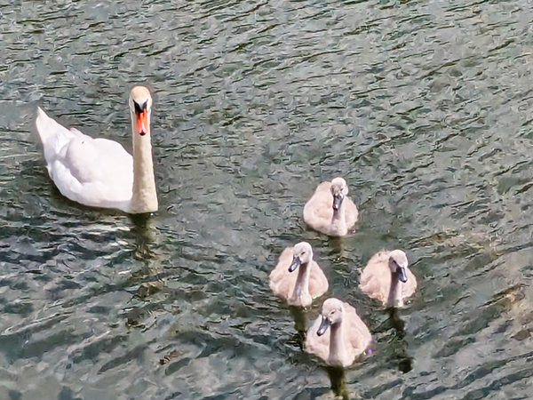
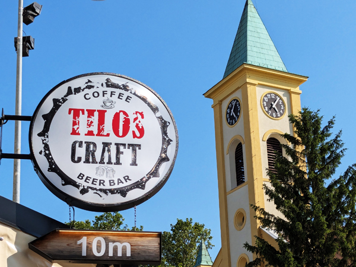
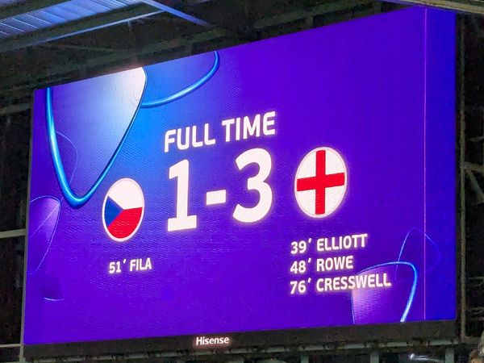
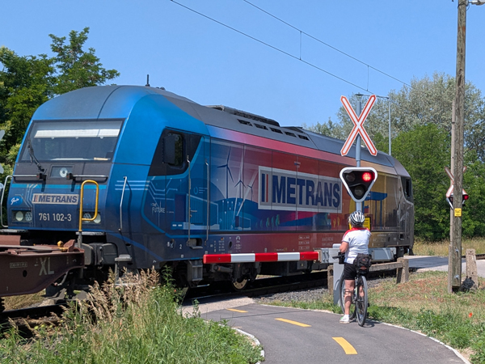
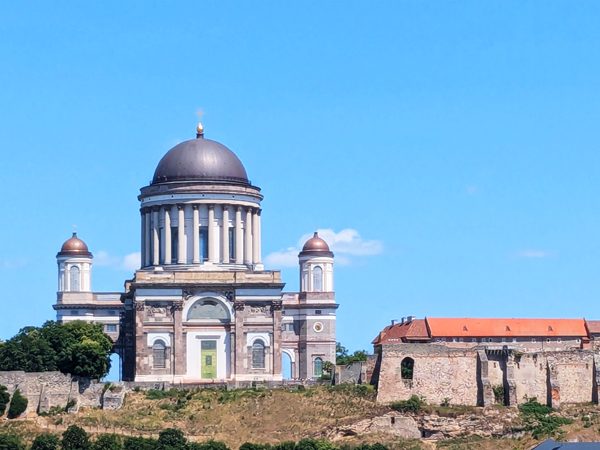

Sunday 8th June We checked out of the hotel at 8:45 and after stopping for petrol and food for breakfast, we were on our way out of Gerona by 9:00. We knew that today would involve a lot of driving. We have to be in Nitra, Slovakia for England's first game in the U21's on Thursday and this will involve a trip of about 1200 miles. We wanted to do a big chunk of that today.
We started heading North and drove into France before stopping for breakfast. We did not have anywhere booked to stay tonight as we did not know how far we would go. We had planned to drive through Switzerland and stay somewhere there but after a couple of hours, the sat-nav was telling us to go a different route. This meant going very close to Lyon before continuing North, missing Switzerland altogether and going straight from France into Germany tomorrow.
We found a city that neither of us had heard of - Besançon - that had an Ibis and was just about on the route. We had a couple of stops on the way and completed the journey of about 485 miles by just after 5pm. Although there had been a lot of driving, it was all relatively easy driving again so was not too bad a day.

We checked in and went straight out for a walk around Besançon. We had picked Besançon fairly randomly but the old town centre is a UNESCO World Heritage Site and is actually a very nice place. We wandered round the main sights and up to the citadel before heading back to the hotel. We were both tired by this stage and had decided to get a takeaway instead of going out to eat. By the time we were back in the hotel, the final of the French Open was getting exciting so I went out to get a take-away pizza which we ate in the room while Roz watched the tennis.
Monday 9th June There was one sight that we had missed yesterday, Porte Rivotte, one of the city's gates near the cathedral and citadel. When we got up we walked through the town again to the gate and stopped to buy breakfast and a few other things on the way back. We ate breakfast in one of the squares and then returned to the hotel to check out.
We left the hotel just before 10 and drove back to the motorway stopping for petrol on the way. We were heading for Memmingen today. Not as far as yesterday but still about five and a half hours of driving due to being on much slower roads. As soon as we crossed into Germany, the motorway became a lot busier and we decided to do a lot of the journey on normal roads anyway.
This did not look a good decision at first as it was a German bank holiday and the road through The Black Forest was very congested when we got on it. However, it quietened down after a while and it was a very scenic and pleasant journey. The section through The Black Forest itself was particularly spectacular. We arrived at the apartment we had booked in Memmingen at about 15:40.
We had only eaten a slice of pizza each on the way here so, after letting ourselves into the apartment, Roz went across the road and bought a couple of croissants and a couple of bottles of beer from the garage. We consumed these on our balcony before walking into Memmingen.
It was about a 30 minute walk into the centre of the old town. We knew Memmingen was a nice place and the centre was typical of a lot of the towns in Bavaria. After taking a few photos, we started looking for somewhere to drink. There did not seem to be a huge number of decent options but we did find a couple of very good places.

We started at Zur blauen Traube, a traditional Bavarian style restaurant. We had planned to just have a drink here but the menu looked good so we stayed for a few and also had meals. We walked from there to Joesepp's Brauhaus, a more modern place that seemed remarkably similar to the Barfüßer Hausbrauerei in Ulm. We had a couple more in there before returning to Zur blauen Traube for another one.
In the absence of anything else left open by this time, we called into Kelly's Irish Pub for one before walking back to the apartment. We had a couple more drinks on the balcony before bed.
Tuesday 10th June We were quite late getting up this morning and did not leave the apartment until 11:50. We still had six or seven hours driving to get to where we are going in Slovakia and decided to split the journey with a couple of nights at Bad Füssing. This is a small spa town close to the Inn river.
We left the apartment and drove to Rewe where we got rid of our empty bottles from last year, bought breakfast and a few other things and filled up with petrol. The drive was fairly straight-forward again and took just under three hours. We arrived in Bad Füssing at 14:20.
We had not booked anywhere to stay here as there seemed to be a lot of very good options available and we thought we may get a better price if we just turned up. The first place we tried was City Appartementhotel who offered us a room at exactly the same rate that we could have booked it for in advance. We took it anyway and were given a decent room with a small kitchen and a balcony.
We had lunch on the balcony and went for a walk around the town. It is not the most lively of places as it seems to cater mainly for older people in search of thermal spa therapies but it was all nice enough and we found somewhere that looked good for eating tonight.
After walking back to the room, we went straight back out on our bikes. We did not want to go too far but cycled down to the Inn and did a few miles on the Austrian side of the river. Before returning to Germany, we stopped in Obernberg am Inn and had a couple of drinks at Moe's Tavern in a very nice square. We cycled back to the apartment and, after showers had a couple more drinks on the balcony.

We went out at about 8:30 and went straight to Gaststätte Hofschänke about a five minute walk away. We ate there with a few more drinks before returning to the balcony to watch the end of the England v Senegal game. Had one more drink before bed.
Wednesday 11th June We were up by 9ish and had breakfast on the balcony. Today we had planned to do our longest bike ride of the trip so far, along the Inn to Braunau am Inn. We set off just before 10:00 and cycled back to the river. This time we did not cross over but stayed on the German side. We cycled up-river to Simbach where we did cross over to Braunau which is on the Austrian side.
Braunau am Inn is another nice little town but is famous (or infamous) for being the birthplace of Adolf Hitler. We stopped in the main square for a rest and then walked out to the place where he was born. The house is currently being renovated "so that it will not be recognisable" and will at some point in the future, open as a police station. The residents do not seem keen on keeping too much to remind people of where he was born.

We returned to our bikes and started the journey back to Bad Füssing. We started on the Austrian side but the route crossed the river after about eight miles and so we did a lot of the route along the same path that we had gone out on. We were back in Bad Füssing by about 2:30 having done just under 40 miles. We bought food from the supermarket and returned to the room for lunch.
For the first time really since we left home, we then had a few hours without much to do. I went for another walk around the town to try and complete my steps for the day while Roz stayed on the balcony. We both returned to the supermarket for a few more things but it was a lazy afternoon.
We were having another night off alcohol as we have a four drive tomorrow and we will probably be drinking for the next few days. Again, we decided not to eat out and ate on the balcony again.
Thursday 12th June - Czech Republic U21 v England U21 We had to check out by 10:00 this morning but had decided we wanted to do a few miles on the bikes before we left. We were up by 6:30 and were on our way about 15 minutes later. We cycled back to the Inn and turned left this time heading down-river on the German side. We did not have any particular destination in mind but cycled for a an hour before turning round and going back the same way. We did a round trip of just over 22 miles and were back at the apartments before 9:00.
After showers and breakfast, we loaded up the car and started the final leg of our journey to Slovakia. We had a drive of about four hours to get to Dunajská Streda. We drove along the same route we have been cycling and crossed The Inn into Austria. We filled up with petrol and bought our motorway vignette just over the border. We then had another fairly straight-forward journey. We had a stop for lunch and another at the Slovakian border to buy our second vignette of the day. We arrived in Dunajská Streda just before 2:30 and found our way to BeKiVi apartman where we had booked a studio apartment for one night. The journey from Girona had been about 1155 miles.
We unloaded the car and headed out fairly soon afterwards. We decided to have a look round the town before starting to drink but there was not that much to see. Although nice enough, the town centre was very small and by the time we had walked through it in a few minutes, we were stood by the first pub on my list. We went into Country Pub and had our first beer of the day. Standard lager but less than £2 a pint.

They were not serving food in Country Pub so we went out in search or somewhere that was. We ended up in Reštaurácia Fontána and had meals in there before moving to Tilos Sörbár, a craft beer bar near-by (everything is near-by as it is a very small town). We spent the rest of the afternoon in there as it was a nice place and had more beer options. We were joined by Phil not long after we got there and eventually Steve turned up as well. After a few in there, we started making our way to the ground at about 8:30 for a 9:00 kick-off.
The ground was only 10 minutes from where we were drinking and we were in our seats with plenty of time to spare. The game was excellent and a lot more entertaining than the two recent senior internationals. There were more England fans around than there had been in Georgia but as is usual at U21 tournaments, we were vastly outnumbered. We were supposedly in the England end but there were still less than 100 of us in a stand packed with Czechs. It was still a friendly atmosphere despite us beating them relatively comfortably again.

After the game, we stayed around to applaud the players as we were in no hurry to get away. We said goodbye to Phil (driving back to Senec) and Steve (on a bus back to Bratislava) and walked back into town. We had one more beer at Kotyogo Coffee & Bar before getting back to the apartment just after midnight.
Friday 13th June We were up by 8ish, had breakfast sat outside the room and packed up and left by 9:45. Now we are in Slovakia, the driving distances are a lot less and we only had a drive of about an hour today. We had booked two nights in an apartment in Komárno, a town on the Slovakian side of The Danube. We knew we would not be able to check-in before 14:00 so parked the car near the river when we got there and went off on our bikes for a couple of hours.
We first went to check the location of our apartment and the car parking situation and then headed back to the river and crossed over into Hungary. We found the European Cycle Route 6 which goes through this area along the river. We joined the route and headed up-river towards Győr. We did not get as far as Győr but turned round when we were up to about 14 miles as we needed to be back at the apartment by 2pm.
It was an enjoyable ride. The Hungarian section of the cycle path was one of the best we have been on. It was a very smooth surface, it was well sign-posted and there were very few other cyclists.

We were back in the centre of Komárno before 2pm and went to the "Courtyard of Europe" where our apartment is located. We were joined by Steve who is staying with us for the next couple of days and at about 14:15, the apartment owner turned up to let us in. It is a lovely apartment with good views of the square.
We went straight out for lunch and then I walked back and got the car. Parking near the apartment was free after 4pm and I was able to get a space about 100m away. We had a few trips back and fore with all our stuff and on one of the trips found a place that may be able to rent Steve a bike for tomorrow.
We went out to eat just after 7. We ate and had a few beers at Reštaurácia Banderium which is in the hotel where Steve is hoping to rent his bike from and then returned to a bar near our hotel for a couple more drinks.
Saturday 14th June We were all up by 8ish. Steve went off to get his bike and we all set off just after 9:00. We were heading for Štúrovo about 34 miles away along the Danube. We had a stop for breakfast and another couple of rest stops on the way and arrived in Štúrovo at about 1:20. As with yesterday, the path was very good and reasonably well sign-posted. It was quite hot but there was a bit of a breeze so quite good conditions for cycling.

We cycled as far as the bridge that crosses the river to Hungary. From here there were very good views Esztergom Basilica on the other side of the river. After we had all had a few photos here, we split up. Steve and Roz went to get something to eat and then crossed into Esztergom to get the train back to Komárom. I was keen on doing a longer ride so turned round and did exactly the same route in reverse. This time I did it non-stop and was back in Komárom in 2 hours 21 minutes. All very enjoyable in both directions.
After getting back I went for a walk around the town while waiting for the others to get back. We were all back in the apartment by 6ish.
We went out again at about 7:30. We had pizzas at the place near our apartment that we had been drinking in last night, "Sofia - kaviareň a bar" and then went to a couple of bars. We had one drink in Viking Bar and a couple in Black Dog pub before walking back to the apartment.